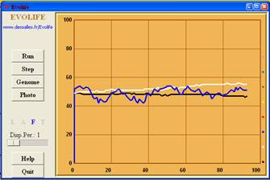

Evolife Jean-Louis Dessalles
Telecom ParisTech
www.dessalles.fr
2. How to execute Evolife (+ download)
7. Create your
own Evolife scenario
8. Use Evolife’s components separately
(graphics, ecology, genetic algorithm)
Evolife is launched by executing Starter.bat
(or starter.sh)and then by
clicking on the [Run] button (see How
to execute Evolife).
First, Evolife reads a configuration file exported
from the Configuration Editor, Evolife.evo by default (note
that configuration files are perfectly readable and can be edited by hand, but
the Configuration Editor is much more convenient).
When Evolife is executed from the Configuration
Editor, it imports the scenario it is supposed to simulate. The name of the
scenario, e.g. ‘Beehive’, is
retrieved from the configuration file which contains a line starting with S_Beehive.
The scenario is supposed to be written in a file like S_Beehive.py
in the directory Scenarii (see Create your own Evolife scenario).
Evolife
first creates an ‘observer’, which contains a few global constants and performs
statistics as the simulation runs.
Evolife
then creates a population of individuals. The population is structured in
groups. Individuals interact and procreate within groups, and migrate
between groups. Each individual is characterized by its genotype (class Genome),
its phenotype (class Phenome) and its social network (class Alliances)
(see Evolife classes).
Evolife
then starts the main window, defined in Evolife_Window.py
(see Evolife source files).

When the button is clicked on (or the key ‘R’ is
pressed), Evolife
starts the simulation. It creates a simulation
thread, defined in Simulation_Thread.py, by executing the line:
self.simulation
= Simulation(self.OneStep,functioning_mode, self.ReturnFromThread)
The function stored in self.OneStep
is the function (defined in Population.py) that executes
one step of the simulation (typically, one complete year, with interactions,
reproduction, selection and migration). Then control is given to the function self.ReturnFromThread
(defined in Evolife_Window.py), which
interprets the results produced by the simulation and plots curves. If that
function returns –1, then the simulation stops,
otherwise it resumes.
The Evolife window provides various buttons and
keyboard shortcuts, as defined in the Help file.
When Evolife quits, it creates various files.
See How to execute Evolife.
2. How to execute Evolife (+ download)
7. Create your
own Evolife scenario
8. Use Evolife’s components separately
(graphics, ecology, genetic algorithm)
Evolife
Jean-Louis Dessalles
Telecom ParisTech
www.dessalles.fr